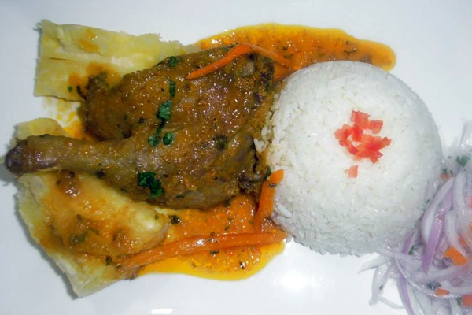

Recetas de Odin

Reseña del Pato en aji
El Pato al ají es una receta típica del norte de Lima y se prepara en cualquier época del año. Aquí compartimos una deliciosa receta del pato al ají como se prepara en Huaral y Huacho.
A continuacion le compartimos como preparar este delicioso plato.
Ingredientes:
- 1/2 de pato (mitad de pato)
- 1/2 taza de cerveza negra
- Cebolla mediana picada en cuadritos
- Aceite y sal
- 2 cdas de ajos molido
- Pizca de pimienta y comino
- 4 cdas de ají mirasol molido
- 4 cdas de ají panca molido
- 4 cdas de ají amarillo escabeche molido
Preparacion:
- En una olla colocar aceite, agregar la cebolla picada hasta que dore.
- Agregar ajos, ají amarillo, ají mirasol, ají panca y dorar bien.
- Agregar la sal, pimienta y comino, y las presas de pato.
- Una ve que empiece a cocinar, agregar la cerveza negra y dejar cocinar por 5 minutos revolviendo siempre.
- Agregar ahora el caldo hasta que cubra las presas y corregir la sal.
- Cocinar a fuego medio por 45 minutos hasta que la carne del pato este tierna.
- Acompañar con arroz, con yucas sancochadas y frijol canario. No olvides colocar un poco de culantro picado sobre la preparación para resaltar los sabores y darle frescura al plato.